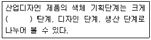
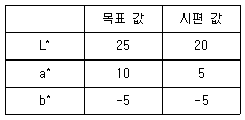
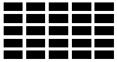

컬러리스트기사 (2010-07-25 기출문제)
1과목: 색채심리 마케팅
1. 매슬로우(Maslow)욕구단계(1단계~5단계의 순)가 옳은 것은?
- 안전의 욕구, 사회적 욕구, 존경욕구, 생리적 욕구, 자아실현의 욕구
- 생리적 욕구, 안전의 욕구, 존경욕구, 사회적 욕구, 자아실현의 욕구
- 생리적 욕구, 안전의 욕구, 자아실현의 욕구, 사회적 욕구, 존경의 욕구
- 생리적 욕구, 안전의 욕구, 사회적 욕구, 존경의 욕구, 자아실현의 욕구
(정답률: 알수없음)

2. 다품종 소량생산체제로 변화되는 최근의 시장은 표적마케팅을 지향한다. 표적마케팅은 시장세분화, 시장표적화,위치선정의 3단계를 거쳐 이루어지는데,시장 표적화 단계를 가장 적절하게 설명한 것은?
- 시장을 상이한 제품을 필요로 하는 구매 집단으로 나누는 것
- 지리적, 인구 통계적, 심리적 변수로 시장을 세분화 하는 것
- 여러 세분화된 시장 중에서 하나 또는 그 이상을 세부 선정하는 것
- 경쟁 제품과의 위치와 상세한 마케팅 믹스를 개발 하는 것
(정답률: 알수없음)
3. 색채 조사를 위한 표본 추출 방법으로 옳지 않은 것은?
- 편차가 가능한 많이 나는 방식으로 한다.
- 무작위로 표본추출 한다.
- 대규모 집단에서 소규모 집단으로 한다.
- 모집단에 대한 정확한 이해가 선행되어야 한다.
(정답률: 알수없음)
4. 고객으로 하여금 기업의 우수성이나 사회적인 신뢰도 등을 알리는 광고로서 이미지 구축을 위한 광고의 형태는?
- 상품광고
- 기업광고
- 홍보광고
- 대중광고
(정답률: 알수없음)
5. 다음 중 색채조절의 효과가 아닌 것은?
- 신체의 피로를 막는다.
- 안전이 유지되고 사고가 줄어든다.
- 개인적 취향이 잘 반영된다.
- 일의 능률이 오른다.
(정답률: 알수없음)
6. 제품의 위치(Positioning)대한 설명으로 틀린 것은?
- 제품마다 소비자들에게 인지되는 속성의 위치가 존재한다.
- 특정 제품의 확고한 위치는 소비자의 구매 결정을 돕는다.
- 세분화된 시장 특성에 따른 제품의 위치 선정이 중요하다.
- 하나의 브랜드 내에서 차별적인 제품위치 설정은 효과적이지 않다.
(정답률: 알수없음)
7. 다음 중 제품정보로서의 색과 관련된 색채연상효과에 관한 설명으로 거리가 먼 것은?
- 바나나 우유의 포장 용기를 노란색으로 채색하였다.
- 청량음료 용기에는 한색과 흰색의 조합에 의한 배색이 주로 사용된다.
- 가전제품의 경우 전원과 메뉴 선택 버튼을 시각적으로 쉽게 인지되고 사용이 편리하게 색채를 적용한다.
- 전투복의 색상은 주위 환경에 위장이 용이한 색채로 디자인 한다.
(정답률: 알수없음)
8. 다음 중 색채와 음악을 연결한 공감각의 특성을 잘 이용하여 브로드웨이 부기우기(Broadway Boogie Woogie)라는 작품을 제작한 작가는?
- 요하네스 이텐(JohanessItten)
- 몬드리안(Mondrian)
- 카스텔(Castel)
- 모리스 데리베레(MauriceDeribere)
(정답률: 알수없음)
9. 소비자의 광고수요에 의한 구매의사 결정과정으로 옳은 것은?
- 주의 – 흥미 – 욕구 – 기억 - 행위
- 주의 – 욕구 – 기억 – 흥미 - 행위
- 기억 – 흥미 – 주의 – 욕구 - 행위
- 주의 – 기억 – 욕구 – 흥미 - 행위
(정답률: 알수없음)
10. 다음 중 구매결정과정에 영향을 미치는 주요 요인이 아닌 것은?
- 구매의 중요성
- 대체 상품의 존재여부
- 지적 수준
- 개성
(정답률: 알수없음)
11. 다음 SD법에 대한 설명 중 틀린 것은?
- 복잡한 이미지를 비교적 단순한 설계에 의해 그 의미공간을 파악할 수 있다.
- 몇 개의 유사 형용사 쌍으로 척도를 만들어 평가하게 한다.
- 피험자에게 친숙한 개념의 이미지 측정일수록 정확한 결과를 얻는다.
- 요인분석을 통하여 그 대상의 의미공간을 분석하므로서 이미지의 구성 요인을 알아낸다.
(정답률: 알수없음)
12. 다음 중 생동,열정,활력으로 상징되는 정력적인 배색은?
- 파랑과 남색
- 검정과 회색
- 빨강과 주황
- 다홍과 파랑
(정답률: 알수없음)
13. 소비자 시장을 파악하기 위한 인구 통계적인 요인 조사에 해당하지 않는 것은?
- 소비자의 연령·성별 차이
- 소비자의 감성별 차이
- 소비자의 거주 지역별 차이
- 소비자의 라이프스타일 차이
(정답률: 알수없음)
14. 빛의 분광을 통해 발견된 일곱가지 색을 칠음계에 연계시키면서 색채와 소리의 관련성을 설명한 사람은?
- 뉴턴
- 요하네스 이튼
- 먼셀
- 램버트
(정답률: 알수없음)
15. 제품의 색채 계획 중 기획단계에서 해야 할 것이 아닌 것은?
- 주조색,보조색 결정
- 시장과 소비자조사
- 색채 정보 분석
- 제품기획
(정답률: 알수없음)
16. 기업이 원하는 표적시장을 통하여 원하는 결과를 얻을 수 있도록 사용하는 통제 가능한 마케팅변수의 총집합을 무엇이라고 하는가?
- 마케팅변수
- 마케팅믹스
- 마케팅구조
- 마케팅 전략
(정답률: 알수없음)
17. 조사를 위한 표본 크기에 대한 내용으로 틀린 것은?
- 표본의 오차는 표본의 크기와 모집단 크기에 비하여 정비례하는 경향이 있다.
- 표본의 사례 수는 오차와 관련되어 있다.
- 적정 표본 크기는 허용오차 범위에 의해 달라진다.
- 전문석이 부족한 연구자들은 선행연구의 표본 크기를 고려하여 따른다.
(정답률: 알수없음)
18. 색채의 상징으로 틀린 것은?
- 운동복,경기장 배경 등 스포츠에서의 색채의 사용은 정보체계로서의 역할을 한다.
- 흰색은 서양에서는 순결을 상징하나,동양에서는 장례식을 상징한다.
- 고대건축에서 색채는 장식적으로 사용되었으나 중세에 이르러서는 상징적으로 사용되었다.
- 교통 및 공공시설물에 사용되는 안전을 위한 표준색은 국제 언어로서 활용된다.
(정답률: 알수없음)
19. 멀티미디어 디자인의 특징과 관련이 없는 것은?
- one-waycommunication
- user-centereddesign
- informationarchitecture
- userinterface
(정답률: 알수없음)
20. 다음 중 컬러(색채)시장조사 방법으로 부적합한 것은?
- 목표가 되는 소비자의 행동을 면밀하게 직접 관찰한다.
- 목표 소비자집단의 색상 기호 또는 색상 선호도를 조사한다.
- 자사TV또는 신문광고의 만족도에 대해 사후설문조사를 한다.
- 시멘트 같은 간접 소비재의 경우 라디오 광고 청취율을 조사한다.
(정답률: 알수없음)
2과목: 색채디자인
21. 빅터 파파넥(VictorPapanek)이 말한 형태와 기능, 미적인것과 기능적인 것에 대한 복합기능의 구성요소로서 연결이 옳은 것은?
- 미학 – 보편적인 것이며, 인간의 욕망에 관계된 것
- 필요성 – 특수한 목적을 달성하기 위한 의도적인 실용화
- 연상 – 경제적, 정신적, 지적 요구가 복합된 디자인
- 방법 – 재료, 도구, 공정과의 상호작용
(정답률: 알수없음)
22. 단순한 공예운동이나 건축운동이 아니라 결집된 형태의 운동을 전개하고 디자인의 표준화 및 규격화를 추구한 것은?
- 미술공예운동
- 아르누보
- 독일공작연맹
- 다다이즘
(정답률: 알수없음)
23. 게슈탈트의 원리 중 부분이 완전하게 연결되지 않아도 완전하게 보려는 시각법칙은?
- 폐쇄성
- 인접성
- 유사성
- 연속성
(정답률: 알수없음)
24. 1960년대 후반부터 미국에서 현저하게 나타난 동향으로 단순한 기하학적 형태를 사용하며 이미지와 조형요소를 최소화하여 기본적인 구조로 환원시키고 단순함을 강조한 것은?
- 팝아트
- 옵아트
- 미니멀리즘
- 포스트모더니즘
(정답률: 알수없음)
25. 1957년에 설립되었으며 한국디자인 교육의 새로운 시대를 열게 한 것으로 높은 평가를 받았던 기관은?
- 한국디자인진흥원
- 한국공예시범소
- 한국색채디자인연구소
- 한국제품디자인협의회
(정답률: 알수없음)
26. 기업이나 기관, 행사 등 대상의 이미지를 일관성 있게 관리하기 위한 것은?
- 타이포그래피 디자인
- 아이덴티티 디자인
- 에디토리얼 디자인
- 인터페이스 디자인
(정답률: 알수없음)
27. ( )에 가장 적당한 것은?

- 기술
- 기획
- 제안
- 기능
(정답률: 알수없음)
28. 제품 디자인의 개발과정에서 친환경적인 디자인 또는 그린 디자인(GreenDesign)의 기본원리라고 볼 수 없는 것은?
- 재사용을 위한 디자인
- 분해를 위한 디자인
- 재활용을 위한 디자인
- 폐기를 위한 디자인
(정답률: 알수없음)
29. 다음 중 환경 디자인의 영역이 아닌 것은?
- 패브릭디자인
- 점포디자인
- 조경디자인
- 도시디자인
(정답률: 알수없음)
30. 1919년에 월터 그로피우스를 중심으로 독일의 바이마르에 설립된 조형학교는?
- 독일공작연맹
- 데스틸
- 바우하우스
- 아르데코
(정답률: 알수없음)
31. 도형과 바탕의 반전에 관한 내용 중 바탕이 되기 쉬운 영역의 예에 해당하는 것은?
- 기울어진 방향보다 수직, 수평으로 된 영역
- 비대칭 영역보다 대칭형을 가진 영역
- 위로부터 내려오는 형보다 아래로부터 올라가는 형의 영역
- 폭이 일정한 영역보다 폭이 불규칙한 영역
(정답률: 알수없음)
32. 좋은 디자인으로 평가받기 위한 조건들 가운데 들어가지 않는 성질은?
- 합목적성
- 다양성
- 독창성
- 경제성
(정답률: 알수없음)
33. 다음의 배색중 배색원리가 다른 하나는 무엇인가?
- 밤색 – 노란색
- 분홍색 - 빨강
- 하늘색 – 노란색
- 하늘색 - 파란색
(정답률: 알수없음)
34. 일반적으로 지적인 계획과 노력에 의해 목표하는 것을 달성하기 위해 자연과 사회의 변천작용을 계획적으로 실용화하는 것을 지칭하는 용어는?
- 효용성(utility)
- 텔레시스(telesis)
- 트랜드(trend)
- 필요성(need)
(정답률: 알수없음)
35. 현재의 예술의 경향보다 더 앞서 나아가는 전위적인 의미를 지닌 예술사조로 짝지어진 것은?
- 포스트모더니즘, 미래주의
- 플럭서스 키치
- 모더니즘, 아방가르드
- 플럭서스, 아방가르드
(정답률: 알수없음)
36. 단시간 내에 급속도로 생겼다가 사라지는 유행을 의미하는 것은?
- 트랜드
- 포드
- 클래식
- 패드
(정답률: 알수없음)
37. 처음 점이 움직임을 시작한 위치에서 끝나는 위치까지의 거리를 가진 점의 궤적은?
- 점
- 선
- 면
- 입체
(정답률: 알수없음)
38. 1890경부터 약 20년간 벨기에와 프랑스 등을 중심으로 전개된 장식미술 운동은?
- 미술공예운동
- 아르누보
- 산업혁명
- 바우하우스
(정답률: 알수없음)
39. 다음 유행색에 대한 설명 중 옳은 것은?
- 패션이나 미용디자인에 사용되는 색 영역은 비교적 느리게 변한다.
- 당시의 특정한 정치·경제적인 사건의 영향을 가장 많이 받는다.
- 국제 유행색 협회에서 매년 그 해의 색채방향을 분석하고 유행색을 예측한다.
- 어떤 계절이나 일정기간 동안 특별히 많은 사람들이 선호하여 착용한 색을 일컫기도 한다.
(정답률: 알수없음)
40. 건물의 외벽, 건축 현장의 담,아파트 등의 대형벽면에 그린 그림을 무엇이라고 하는가?
- 크래프트
- 슈퍼그래픽
- 퓨전디자인
- 옵티컬아트
(정답률: 알수없음)
3과목: 색채관리
41. 필터의 센서가 일체가 되어 X, Y, Z자극치를 읽어내는 측색방법은?
- 삼자극치 수광방식
- 분광 수광방식
- 육안검색
- 인터폴레이션 색채식
(정답률: 알수없음)
42. 색채측정장치에서 측색신호를 처리하여 색채값을 산출하는 장치는?
- 전산장치
- 시료대
- 광검출기
- 분광장치
(정답률: 알수없음)
43. 조명용 광원에 대한 설명으로 틀린 것은?
- 방전등은 전극 간의 방전에 의해 전자와 기체 분자의 충돌로 빛이 방출된다. 예로는 고압 수은등이 있다.
- 백열등은 전류가 전력이 대부분 빛으로 전환되므로 조명용 광원 가운데 효율이 가장 높다.
- 방전등과 원리는 비슷하나 방전에 의해 발생된 자외선이 유리관 내면에 도포된 형광물질을 자극하여 빛을 방출하는 것이 형광등의 원리이다.
- 일반 형광등은 빛에 푸른 기가 돌아 차가운 느낌을 줄 뿐 아니라, 연색성이 낮은 단점을 갖고 있다.
(정답률: 알수없음)
44. 다음 중 적절한 크기의 안료입자를 합성하는데 필요한 조건과 가장 거리가 먼 것은?
- 반응 조건
- 건조 조건
- 희석제의 종류
- 염료의 종류
(정답률: 알수없음)
45. 다음 중 안료를 이용하여 채색하기에 가장 적당하지 않은 경우는?
- 자동차의 내장 및 외장의 표면코팅
- 직물의 염색
- 유성 및 수성페인트
- 금속판에 사용하는 인쇄용 잉크
(정답률: 알수없음)
46. 디바이스 종속적 색체계에 대한 설명 중 틀린 것은?
- 디지털 색채를 다루는 전자장비들 간에 호환성이 없기 때문에 입출력 전자장비 간의 색채가 일치하지 않는다.
- CIE가 1931년에 발표한 CIEXYZ색채공간이 대표적인 디바이스 종속적 색체계이다.
- 동일한 제조업체의 저품이라도 모델에 따라 색체계가 다르다.
- 제조업체와 모델에 따라서 입출력되는 색이 서로 다르게 나타나기 때문에 색영역 맵핑을 해야 한다.
(정답률: 알수없음)
47. 육안 조색을 통하여 색채 조절시 주의할 점이 아닌 것은?
- 색차의 내용을 주의하여 관측할 필요가 있다.
- 색채계를 이용하여 측정된 결과를 비교 분석한다.
- 색채관측에 있어서 조명환경과 빛의 방향,조며으이 세기는 검토 대상이 되지 않는다.
- 분광반사율의 차이가 색채에 어떤 영향을 미치는지 살펴본다.
(정답률: 알수없음)
48. 색료가 선택되면 그 색료를 배합하여 조색할 수 있는 색채의 범위가 정해진다. 색영역은 이론적인 것으로부터 현실적인 단계로 내려올수록 점점 축소되는데, 다음 중 색영역을 축소시키는 것으로 거리가 먼 것은?
- 주어진 명도에서 가능한 색영역
- 표면반사에 의한 어두운 색의 한계
- 경제성에 의한 한계
- 시간경과에 따른 탈색현상
(정답률: 알수없음)
49. 광원의 분광복사강도분포에 대한 설명 중 옳은 것은?
- 백열전구는 단파장보다 장파장의 복사분포가 매우 적다.
- 백열전구 아래에서의 난색계열은 보다 생생히 보인다.
- 형광등 아래에서는 단파장보다 장파장의 반사율이 높다.
- 형광등 아래에서의 한색계열을 색채가 죽어 보인다.
(정답률: 알수없음)
50. KSA0011에 나타난 표준은?
- 색의 3속성
- 물체색의 이름
- 색차
- 색 밝기
(정답률: 알수없음)
51. 다음 천연염료의 색상이 서로 틀린 것은?
- 쪽 – 청색
- 오배자 - 적색
- 자초 – 자색
- 소목 – 청색
(정답률: 알수없음)
52. 해상도(resolution)에 관한 설명 중 옳은 것은?
- 화면에 디스플레이 된 색채 영상의 선명도는 해상도 및 모니터 크기와는 관계없다.
- ppi는 1인치 내에 들어갈 수 있는 픽셀의 수를 말한다.
- 픽셀의 색상은 빨강,시안,노랑의 3가지 색상의 스펙트럼 요소들로 만들어진다.
- 최고 해상도(1280X1024)를 가지고 있는 디스플레이 시스템은 그보다 낮은 해상도를 지원하지 못한다.
(정답률: 알수없음)
53. CIEDE2000색차식은 CIELAB색차 △E*ab로 일정한 차이이하의 정밀한 색차에 대하여 적용할 것을 권장하고 있다. 이 적용한계는 얼마인가?
- △E*ab ≤ 10.0 .
- △E*ab ≤ 5.0
- △E*ab ≤ 2.5
- △E*ab ≤ 2.0
(정답률: 알수없음)
54. 다음 중 컴퓨터 자동배색(CCM)의 특징이 아닌 것은?
- 광원이 바뀌어도 색채가 일치함
- 사용되는 색료량을 정확하게 지정할 수 있음
- 발색에 소요되는 비용을 정확히 산출할 수 있음
- 자동배색 과정 중에 혼입되는 각종 요인에서도 색채가 변하지 않음
(정답률: 알수없음)
55. 광원에 대한 현상 중 틀린 것은?
- 광원에 따리 색이 달라지는 효과를 메타메리즘이라고 한다.
- 광원의 연색성을 이용하면 보다 효과적인 색채연출이 가능하다.
- 어떤 색채가 매체,주변 색,광원,조도 등이 다른 환경에서 관찰될 때 다르게 보이는 현상을 컬러어피어런스라고 한다.
- 온도가 비교적 낮은 차가운 물체에서 가시광선 영역의 빛이 나오는 것을 루미네선스라 한다.
(정답률: 알수없음)
56. 경면 광택도는 측정대상에 따라 구분하여 사용한다. 잘못 짝지어진 것은?
- 85도 경면 광택도 Gs(85) : 종이, 성뮤 등 광택이 없는 대상
- 60도 경면 광택도 Gs(60) : 도장면, 타일, 법랑 등 광택범위가 넓은 범위의 대상
- 45도 경면 광택도 Gs(45) : 피부, 가죽 등 광택이 비교적 낮은 대상
- 20도 경면 광택도 Gs(20) : 도장면, 금속면 등 비교적 광택도가 높은 것끼리의 비교
(정답률: 알수없음)
57. 색채측정 결과에 반드시 첨부해야 될 사항으로만 나열된 것은?
- 표준광의 종류, 표준관측자, 색채측정방식
- 표준광의 종류, 표준회색도, 시료의 크기
- 표준관측자, 시료의 두께, 색상명(HV/C로 표시)
- 조명과 관측조건, 표준 회색도, 측정실 온도
(정답률: 알수없음)
58. 컴퓨터에서∙작은 그림을 크게 확대하면 나타나는 방식은?
- 보간법
- 점증법
- 외삽법
- 대입법
(정답률: 알수없음)
59. 디지털 색체계에서 컬러세팅(colorsetting)에 대한 설명으로 옳은 것은?
- 감마(gamma)는 컴퓨터 모니터 또는 이미지의 각 부분에 해당 하는 어둡기와 색상,채도를 말한다.
- UCR은 UnderColorRemoval로서 주로 흑백톤의 조절에 사용된다.
- GCR은 GrayComponentRemoval로서 원색잉크의 농도에 따라 흑색 잉크의 농도가 자동적으로 조정된다.
- WhitePoint는 모니터나 소프트웨어를 보면 흰색을 제외한 컬러를 기준으로 설정하도록 하는 것이다.
(정답률: 알수없음)
60. 다음 표와 같이 목표 값과 시편 값이 나왔을 경우 시편 값의 보정방법은?

- 빨간색 도료를 이용하여 색상을 보정하고 흰색을 이용하여 밝기를 조정한다.
- 노란색 도료를 이용하여 색상을 보정하고 검은색을 이용하여 밝기를 조정한다.
- 녹색 도료를 이용하여 색상을 보정하고 검은색을 이용하여 밝기를 조정한다.
- 파란색 도료를 이용하여 색상을 보정하고 흰색을 이용하여 밝기를 조정한다.
(정답률: 알수없음)
4과목: 색채지각론
61. 컬러 인쇄의 3색 분해를 할 때,컬러필름의 색들을 3색필터를 이용하여 색 분해하는 것은 어떤 원리를 이용한 것인가?
- 가법혼색
- 감법혼색
- 보색
- 병치혼색
(정답률: 알수없음)
62. 인간 눈의 구조에서 시신경 섬유가 나가는 부분으로 광수용기가 없어 대상을 볼 수 없는 곳은?
- 맹점
- 중심와
- 공막
- 맥락막
(정답률: 알수없음)
63. 색채의 온감에 대한 설명으로 틀린 것은?
- 색채의 온도감은 실제의 경험과 관련되어 있으나 실제의 색과 온도가 반드시 일치하지는 않는다.
- 색채의 온감은 색상에서만 느껴지며,명도,채도에 의해서는 느껴지지 않는다.
- 연두, 녹색, 보라, 자주 등은 때에 따라 차갑게도 따뜻하게 도 느껴지는 중성색들이다.
- 색채의 온도감은 빨강, 주황, 노랑, 연두, 녹색, 파랑, 하양 의 순서로 따뜻하게 느껴진다.
(정답률: 알수없음)
64. 줄눈 색에 따라서 동일한 벽돌이 밝은 주황에서 검붉은 장미색까지 다양하게 변화하는 효과를 보여 주었을 때, 이와 같은 효과와 관련이 없는 것은?
- 동화효과
- 베졸드 효과
- 전파효과
- 혼합효과
(정답률: 알수없음)
65. 채도가 높은 노란색이 또렷이 보이게 하기 위한 가장 적절한 주변의 색은?
- 밝은 노란색
- 저채도의 파란색
- 연한 빨간색
- 선명한 초록색
(정답률: 알수없음)
66. 보색대비에 관한 설명 중 틀린 것은?
- 색상대비 중에서 서로 보색이 되는 색들끼리 나타는 대비효과를 보색대비라고 한다.
- 두 색은 서로 영향을 받아 본래의 색보다 채도가 높아지고 선명해진다.
- 유채색과 무채색이 인접될 때 무채색은 유채색의 보색기미가 있는 듯이 보인다.
- 서로 보색대비가 되는 색끼리 어울리면 채도가 낮아져 탁하게 보인다.
(정답률: 알수없음)
67. 지하 계단을 내려갈 때 지하 비상계단의 발 닿는 부분에는 어떤 색을 사용하는 것이 좋은가?
- 검정색
- 빨간색
- 주황색
- 녹색
(정답률: 알수없음)
68. 연변대비를 감쇄시키고자 할 때 사용하는 방법으로 가장 좋은 것은?
- 색상대비를 더 크게 한다.
- 두 색 사이에 각각 보색의 테두리를 두른다.
- 두 색 사이에 채도가 높은 색의 테두리를 두른다.
- 두 색 사이에 무채색의 테두리를 두른다.
(정답률: 알수없음)
69. 사람이 구별할 수 있는 색의 총수는 대략 몇 가지인가?
- 2000가지
- 20000가지
- 200000가지
- 2000000가지
(정답률: 알수없음)
70. 혼색에 대한 설명 중 틀린 것은?
- 빛의 혼합은 가법혼색이다.
- 컬러인쇄에서는 병치혼색을 사용한다.
- 회전혼색은 중간혼색의 일종이다.
- 점묘화는 감법혼색의 응용이다.
(정답률: 알수없음)
71. 작은 색채 샘플을 보고 색을 선택한 후 벽면 전체에 페인트 칠 한 결과 원래의 색채 샘플 색과 다르게 보였다. 이러한 현상과 관계없는 것은?
- 이러한 현상을 면적대비 또는 면적효과라 한다.
- 동일한 색이라도 면적이 넓어지면 명도가 높아지고 채도는 낮아진다.
- 넓은 벽면에 어떤 색을 칠하고자 할 때 원하는 색보다 명도와 채도가 낮은 색채 샘플을 선택하는 것이 좋다.
- 아파트 외벽과 같은 면적이 넓은 곳에 고채도,고명도의 색을 사용하면 이러한 색의 현상으로 시각을 지나치게 자극할 위험이 있다.
(정답률: 알수없음)
72. 먼저 본 색의 영향으로 나중에 보는 색이 다르게 보이는 대비는?
- 동시대비
- 계시대비
- 한난대비
- 연변대비
(정답률: 알수없음)
73. 공간색이란?
- 맑고 푸른 하늘과 같이 끝없이 들어갈 수 있게 보이는 색
- 유리나 물의 색 등 일정한 부피가 쌓였을 때 보이는 색
- 전구나 불꽃처럼 발광을 통해 보이는 색
- 반사물체의 표면에 보이는 색
(정답률: 알수없음)
74. 그림처럼 교차하는 검정 사각형 사이로 회색 잔상이 보이는 대비효과는?

- 베졸드 효과
- 하만그리드 효과
- 면적대비 효과
- 착시 현상
(정답률: 알수없음)
75. 다음 물체색의 반사율에 관한 설명 중 틀린 것은?
- 전파장에 걸쳐 고른 반사율을 가질 때 흰색으로 보여진다.
- 450nm에서 높은 반사율을 가질 때 파란색으로 보여진다.
- 700nm에서 높은 반사율을 가질 때 붉은 색으로 보여진다.
- 600nm에서 높으 반사율을 가질 때 녹색으로 보여진다.
(정답률: 알수없음)
76. 두 개 이상의 색을 볼 때 색들끼리 서로 영향을 주고 받아서 인접색에 가까운 것으로 느껴지게 하는 현상은?
- 동화현상
- 푸르킨예 현상
- 색음현상
- 색순응
(정답률: 알수없음)
77. 대낮에 극장과 같이 어두운 곳에 들어가면 처음에는 전혀 안보이다가 서서히 보이기 시작한다. 이때 활발하게 반응하기 시작하는 광수용기는?
- 홍채
- 추상체
- 간상체
- 초자체
(정답률: 알수없음)
78. 색의 무게감에 가장 큰 영향을 미치는 속성은?
- 명도
- 채도
- 색상
- 질감
(정답률: 알수없음)
79. 색의 수축과 팽창에 대한 설명 중 틀리 것은?
- 따뜻한 색은 팽창색이 된다.
- 명도가 높은 색은 팽창색이 된다.
- 진출색은 수축색이 된다.
- 차가운 색은 수축색이 된다.
(정답률: 알수없음)
80. 우리 눈은 주위 조명에 따라 색이 바뀌어도 본래의 색으로 보려는 성질을 지니고 있다. 이를 무엇이라 하는가?
- 순응성
- 항상성
- 동화성
- 균색성
(정답률: 알수없음)
5과목: 색채체계론
81. “5Y9/4”의 관용색명은? <KS표준 기준>
- 낙타색
- 솔잎색
- 크림색
- 카키색
(정답률: 알수없음)
82. 자연에서 볼 수 있는 일출이나 일몰과 같이 여러 가지 색들 가운데 한 가지의 색이 중심을 이룰 때 얻어지는 조화는?
- 색상에 따른 조화
- 명도에 따른 조화
- 주조색에 따른 조화
- 보색대비에 따른 조화
(정답률: 알수없음)
83. KS표준에 있는 색이름 수식형이 아닌 것은?
- 노란, 파란
- 갈, 보랏빛
- 자줏빛, 분홍빛
- 초록, 검은
(정답률: 알수없음)
84. 배색된 색을 면적비에 따라서 회전 원판위에 놓고 회전혼색할 때 나타나는 색을 밸런스 포인트라고 하고 이 색에 의하여 배색의 심리적 효과가 결정된다고 한 사람은?
- 슈브릴
- 문·스펜서
- 오스트발트
- 파버비렌
(정답률: 알수없음)
85. 태극기의 색채에 관한 설명으로 틀린 것은?
- 건 ,곤 감, 리의 감은 서쪽의 흰색을 나타낸다.
- 국가에서 제정한 표준색도가 고시되어 있다.
- 춘하추동, 동서남북이 포함되어 있다.
- 태극기의 빨강은 6R4.5/14이다.
(정답률: 알수없음)
86. NCS체계의 뉘앙스 중 중앙에 위치한 것으로 명도,채도의 개념으로 볼 때 중명도와 중채도를 갖는 영역은?
- deepstrong
- clearbright
- gray
- uncharacterisitic
(정답률: 알수없음)
87. 비렌의 색채조화론에 관한 내용으로 틀린 것은?
- 색삼각형의 연속된 선상에 위치한 색들을 조합하면 조화된다.
- color, white, black, gray, tint, shade, tone7개 범주의 조합으로 이루어진다.
- 좋은 배색을 위해서는 오메가 공간에 나타낸 점이 간단한 기하학적 관계에 있어야 한다.
- 색채는 3개의 기본구조는 순색,흰색,검정이다.
(정답률: 알수없음)
88. P, C, C, S, 표색계의 톤에 대한 설명 중 틀린 것은?
- 톤은 명도와 채도의 복합개념을 말한다.
- 연한 녹색은 lt12로 표기한다.
- 무채색은 모두 7톤으로 분류한다.
- Gt-6.5는 6.5명도의 무채색이다.
(정답률: 알수없음)
89. 색쵸와 같은 특정의 착색물체를 정하고,적당한 번호나 기호를 붙여 물체의 색채를 표시하는 표색계는?
- 혼색계
- 현색계
- 감각계
- 지각계
(정답률: 알수없음)
90. CIELAB표색계에 대한 설명으로 틀린 것은?
- a*와 b*값은 중앙에서 바깥으로 갈수록 채도가 감소한다.
- a*는 red–dgreen, b*는 yellow–lblue축에 관계된다.
- a*b*의 수치는 색도 좌표를 나타낸다.
- L*=50은 gray이다.
(정답률: 알수없음)
91. 먼셀의 색채조화의 원리에 관한 설명 중 틀린 것은?
- 중심점으로 N5에 근거한 조화이다.
- 동일색상 조화는 명도와 채도에 대해 정연하다.
- 색채의 연속이 있는 곳은 증가하는 연속만 있다.
- 채도가 같고 명도가 다른 반대색끼리는 회색척도에 관하여 정연한 간격으로 조화된다.
(정답률: 알수없음)
92. 먼셀 표색계의 설명 중 틀리 것은?
- 색입체를 명도 5에서 수평으로 절단하면 등면도의 배열된다.
- 먼셀 표색계는 전세계적으로 가장 널리 쓰이는 혼색계 체계이다.
- 먼셀 색입체의 특징은 색상,명도,채도를 시각적으로 고른 단계가 이루어지도록 한 것이다.
- 채도가 높은 안료가 개발될 때마나 나뭇가지처럼 채도의 축을 늘여가면 좋다고 하여 먼셀의 색입체를 컬러트리(Color tree)라고 불렀다.
(정답률: 알수없음)
93. 오스트발트의 등색상 삼각형에서“gc-lc-pc”조화는?
- 등백계열의 조화
- 라. 등흑계열의 조화
- 유채색과 무채색의 조화
- 등백계열과 등흑계열의 조화
(정답률: 알수없음)
94. 관용 색명에 대한 설명이 틀린 것은?
- 옛날부터 전해 내려오는 습관성으로 사용하는 색명이다.
- 동·식물, 광물, 자연현상, 지명 등의 이름에서 유래 한 색명이다.
- 흑, 백, 적, 황, 녹은 관용색명이다.
- 어두운 회색, 연한 남색은 관용색명이다.
(정답률: 알수없음)
95. CIE 표색계의 특성이 아닌 것은?
- 표준광원이 매우 중요한 비중을 가진다.
- 3자극치를 투사하는 것이다.
- RGB를 기본으로 출발하였다.
- XYZ와 반대의 개념이다.
(정답률: 알수없음)
96. 오스트발트 색체계와 관련 깊은 이론은?
- 문-스펜서 조화론
- 뉴턴의 광학
- 헤링의 반대색설
- 영·헬름홀츠 이론
(정답률: 알수없음)
97. 먼셀기호 “10YR8/12”인 색에 대한 것으로 옳은 것은?
- 명도가 12를 나타낸다.
- 명도가 10보다 어두운 색이다.
- 채도가 10인 색보다 색의 순도가 높은 색이다.
- 채도는 10이다.
(정답률: 알수없음)
98. 오스트발트의 색채조화에서 등색상 3각형의 BLACK을 잇는 평행선상에 있는 색은?
- 등흑계열의조화
- 등백계열조화
- 등순계열조화
- 유채색의 조화
(정답률: 알수없음)
99. 음양오행에 의한 색과 방위의 관계 중 틀린 것은?
- 백 - 서방
- 적 - 북방
- 황 – 중앙
- 청 - 동방
(정답률: 알수없음)
100. DIN색체계의 설명으로 옳은 것은?
- 색상(T),포 화도(S) ,암도(D)로 표현한다.
- 1930~40년대 덴마크 표준화 협회가 제안한 색체계이다.
- 어두움의 정도(D)는 0부터 14까지 숫자들로 주어진다.
- 등색상면은 흑색점을 정점으로 하는 정삼각형이다.
(정답률: 알수없음)